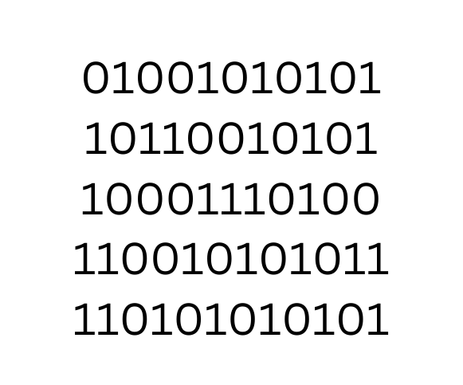

Python - full course
1. Machine language
Computers only know ON and OFF (This process is mainly controlled by microlevel-transistors).
This ON / OFF process is symbolized as 1 (ON) and 0 (OFF). These are called as binary numbers.
Everything in a computer is processed by this 1 and 0. This is called as machine language.

2. What is programming language?